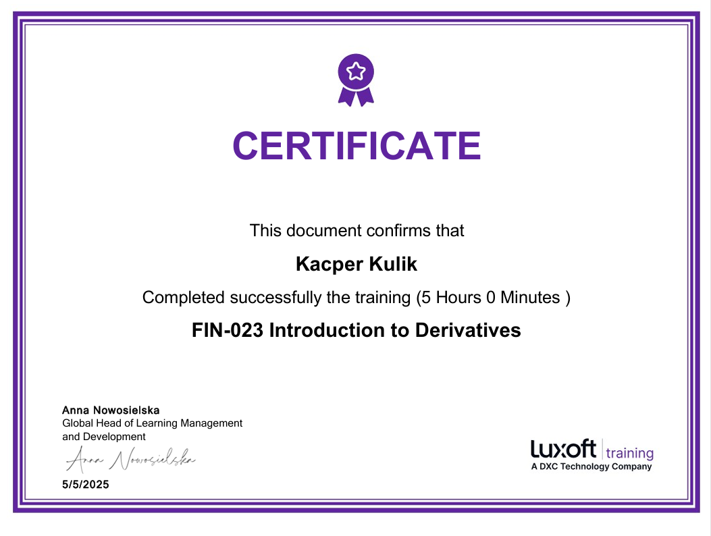
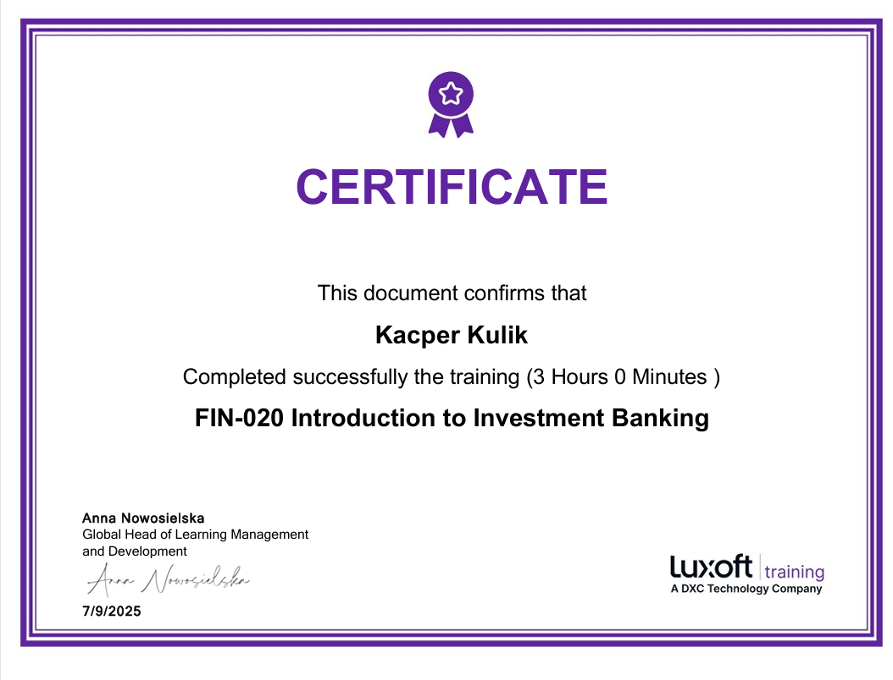
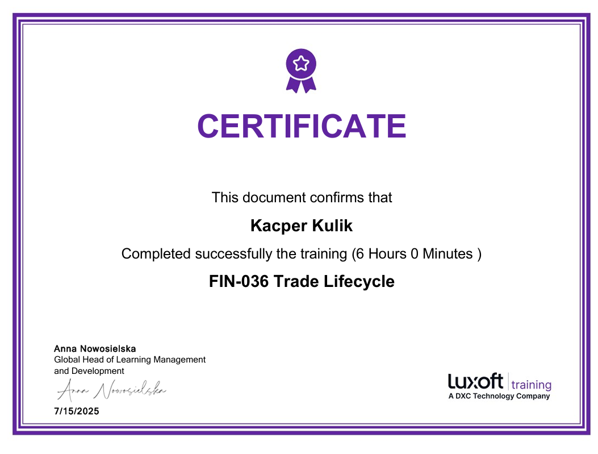

Kacper Kulik
- Wiek: 22 lata
- Miejsce zamieszkania: Kraków
- Forma pracy: Zdalna / Hybrydowa / Stacjonarna
Jestem osobą otwartą i ambitną, która lubi rozwijać się w różnych dziedzinach. Cenię sobie pracę zespołową, kreatywność oraz nowe wyzwania. Poza pracą interesuję się finansami oraz technologią. Na codzień zajmuję się analizą rynków finansowych i programowaniem. Dużo czasu spędzam przed wykresami i kodem, pracując nad stworzeniem skutecznej strategii handlowej, która będzie działać na różnych rynkach. Swoją przygodę zaczynałem od nauki podstaw analizy technicznej – najpierw na rynku kryptowalut, później na Forexie i indeksach CFD. Postawiłem sobie ambitny cel i systematycznie dążę do jego realizacji. Początkowo tworzyłem proste strategie w oparciu o dostępne narzędzia w TradingView i tworzyłem własne indykator w Pine script. Choć nie uważam się jeszcze za profesjonalistę, codziennie handluję, obserwuję ruchy rynków i staram się rozwijać w tym kierunku. Mam nadzieję, że w niedalekiej przyszłości uda mi się osiągnąć zamierzony poziom.
Języki
Polski
Język ojczysty
Angielski
C1 - Zaawansowany
Niemiecki
A1 - Podstawowy
Moje kursy
Day Trading: Mastering Scalp Trading Strategies 2025
Zaawansowany kurs tradingu intraday na rynkach finansowych.
Quantitative Finance & Algorithmic Trading in Python
Kurs algotradingu i finansów ilościowych z wykorzystaniem Pythona.
The Complete Python Bootcamp From Zero to Hero in Python
Kompleksowy kurs Pythona od podstaw po zaawansowane projekty.
Python for Financial Markets Analysis
Kurs analizy rynków finansowych z wykorzystaniem Pythona.
Certyfikaty

Instrumenty Pochodne
Derivative Instruments
Kurs oferuje kompleksowe wprowadzenie do instrumentów pochodnych – kontraktów futures, forward, opcji oraz swapów. Uczestnicy poznają mechanizmy wyceny, strategie zabezpieczające oraz spekulacyjne zastosowania derywatów. Program obejmuje praktyczne aspekty handlu na giełdach oraz rynku OTC, analizę ryzyka i zarządzanie pozycjami. Po ukończeniu kursu uczestnicy potrafią rozróżniać instrumenty giełdowe i pozagiełdowe oraz wykorzystywać je w rzeczywistych sytuacjach finansowych.

Wprowadzenie do Bankowości Inwestycyjnej
Introduction to Investment Banking
Kurs przedstawia fundamenty bankowości inwestycyjnej, w tym fuzje i przejęcia (M&A), emisje akcji i obligacji oraz doradztwo strategiczne. Uczestnicy poznają strukturę organizacyjną banków inwestycyjnych, procesy due diligence oraz metody wyceny przedsiębiorstw. Program obejmuje analizę transakcji, modelowanie finansowe oraz przygotowanie prezentacji dla klientów. Kurs zapewnia praktyczną wiedzę o roli banków inwestycyjnych na rynkach kapitałowych i ich wpływie na gospodarkę globalną.

Cykl Życia Transakcji
Trade Lifecycle
Kurs szczegółowo omawia pełny cykl życia transakcji finansowych – od momentu złożenia zlecenia, przez wykonanie, rozliczenie, aż po archiwizację. Uczestnicy poznają procesy front, middle i back office, systemy zarządzania ryzykiem oraz procedury compliance. Program obejmuje clearing, settlement, reconciliation oraz zarządzanie kolateralem. Kurs zapewnia praktyczne zrozumienie operacji post-tradingowych, standardów rynkowych oraz roli infrastruktury finansowej w zapewnieniu bezpieczeństwa transakcji.